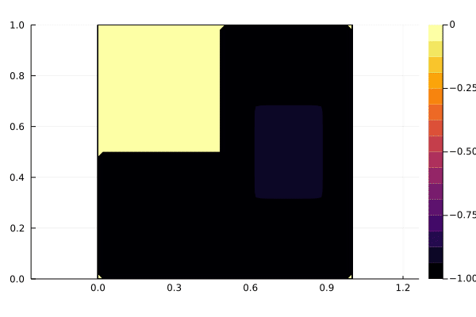

MAM4 - EDP1
Équations aux dérivées partielles 1
2026-27

TD 1 - Propriétés qualitatives de quelques EDP (corrigé)
TD 2 - Étude de consistance (corrigé)
TD 3 - Stabilité (1/2) (corrigé)
TD 4 - Stabilité (2/2) (corrigé)
TP 2 - Chaleur
Bibliographie
Allaire, G. Approximation numérique et optimisation. École Polytechnique, 2019. cel-02168288
Évaluation
2 exams CC (tous coeff. 1)
Organisation
- 9 séances de CM
- 9 séances de TD
Intervenants
- J.-B. Caillau (CM et TD)
- L. Sacchelli (TD)
- Remerciements à V. Dolean pour certains textes de TD / TP